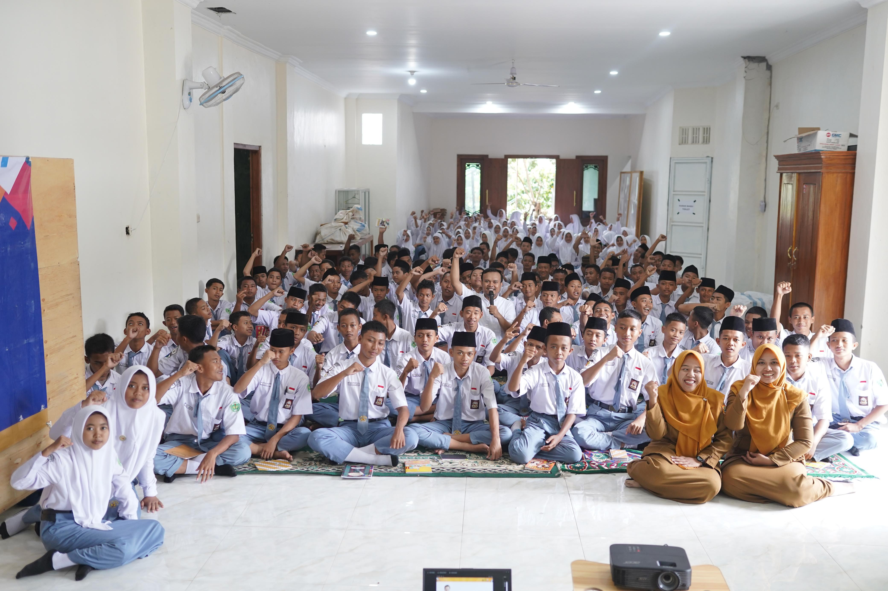
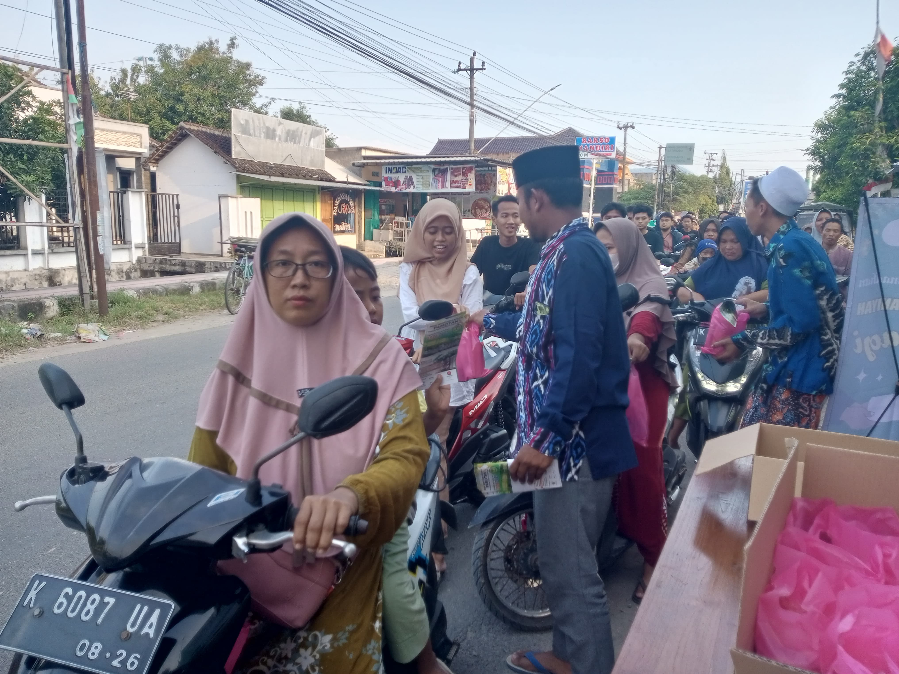
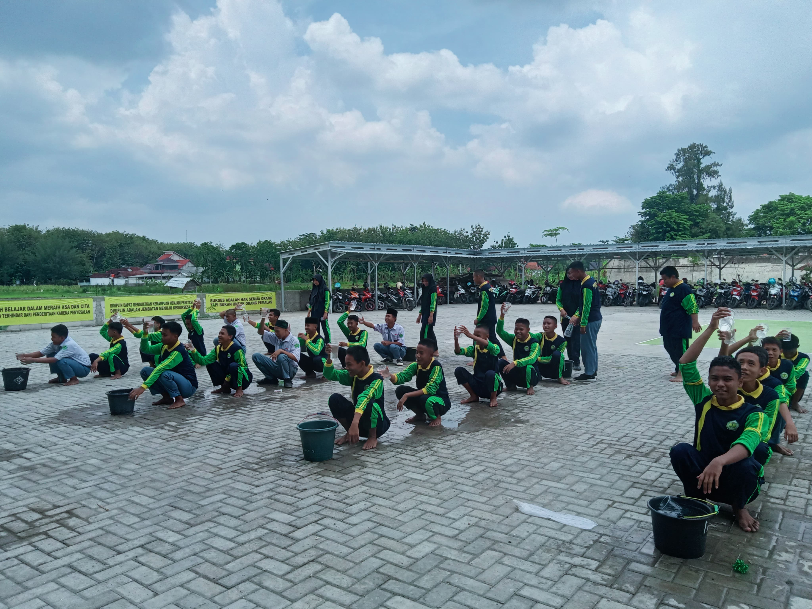
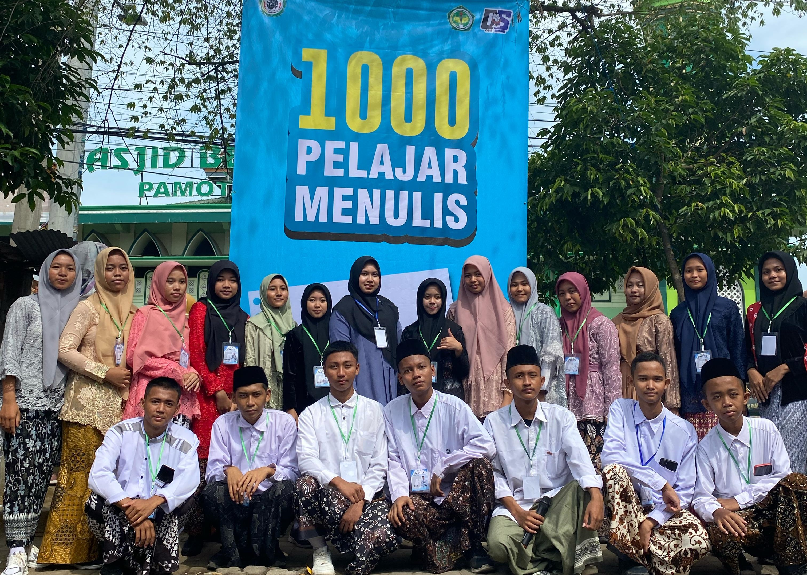
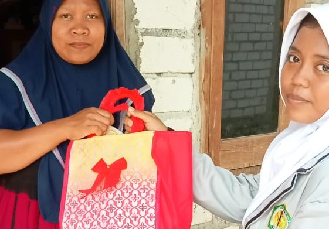

OSIS
Copyright@Nailulmuna
SMK ARROHMANIYAH
OSIS SMK ARROHMANIYAH
OSIS (Organisasi Siswa Intra Sekolah) adalah suatu organisasi yang berada di tingkat sekolah di Indonesia yang dimulai dari SMP, SMA, dan SMK. OSIS diurus dan dikelola oleh siswa yang terpilih untuk menjadi pengurus OSIS. Biasanya organisasi ini memiliki seorang pembimbing seorang guru yang dipilih oleh pihak sekolah. Anggota OSIS adalah seluruh siswa yang berada pada satu sekolah tempat OSIS itu berada. Seluruh anggota OSIS berhak untuk memilih calonnya untuk kemudian menjadi pengurus OSIS.
KEGIATAN OSIS
Public Speaking
Bagi Bagi Takjil
Classmeet

Lomba Pidato 4 Bahasa
Seribu Pelajar Menulis
Bantuan Sosial Bulan Ramdhan
STRUKTUR ORGANISASI
Ketua Osis
M.Bagas Fadqlur Rohman
WakilKetua
Vina Ni'matul Ulya
Sekretaris
Fajar Desta Prasetyo
Bendahara
Nailish Sa'adah
Seksi bidang keimanan dan ketakwaan terhadap Tuhan Yang Maha Esa.
Inayatul Fauziah Dan Iqbal Syauqie Nuroyya
Seksi bidang budi pekerti luhur atau akhlak mulia.
Nur Alyatul Hikmah
Seksi bidang kepribadian unggul, wawasan kebangsaan, dan bela negara.
Nailul Muna Almagfiroh Dan Arif Setiawan W
Seksi bidang prestasi akademik, seni, dan/atau olahraga sesuai bakat dan minat
Ahmad Yusuf Dan Almira Putri
Seksi bidang demokrasi, hak asasi manusia, pendidikan politik, lingkungan hidup, kepekaan dan toleransi sosial dalam konteks masyarakat plural.
Natasya Nur Kholifah Dan Syaihul Irfan
Seksi bidang kreativitas, keterampilan dan kewirausahaan.
Luthfia Ilfa Arrofiqoh Dan Azma Atam Maghfuro
Seksi bidang kualitas jasmani, kesehatan, dan gizi berbasis sumber gizi yang terdiversifikasi.
Siti Mafiroh Dan M.Khoirul Rizki Marom
Seksi bidang sastra dan budaya.
Mir atun Nisak
Seksi bidang teknologi informasi dan komunikasi (TIK).
Mita Eka Pramesti Dan Muhammad Hanif
Seksi bidang komunikasi dalam bahasa.
NailatuS Sholikha Dan Ahmat Fadkul Huda
CONTACT
SMK ARROHMANIYAH PAMOTAN
(587) 764-5724
OSIS SMKAR
CONTACT
SMK ARROHMANIYAH PAMOTAN
(587) 764-5724
OSIS SMKAR